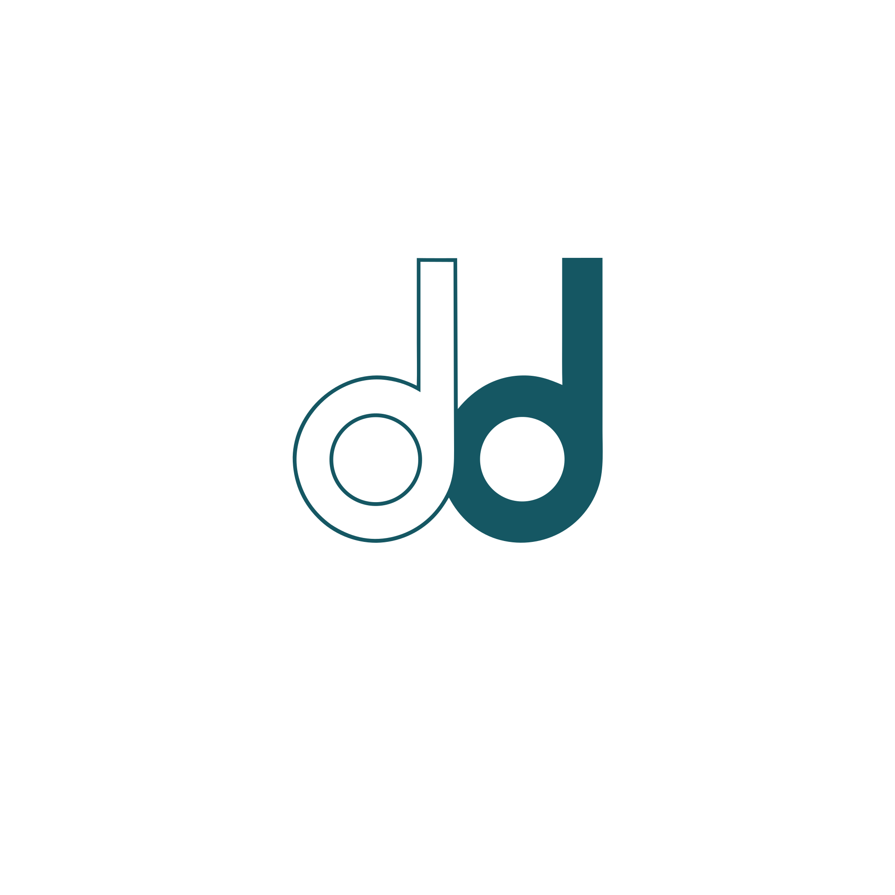
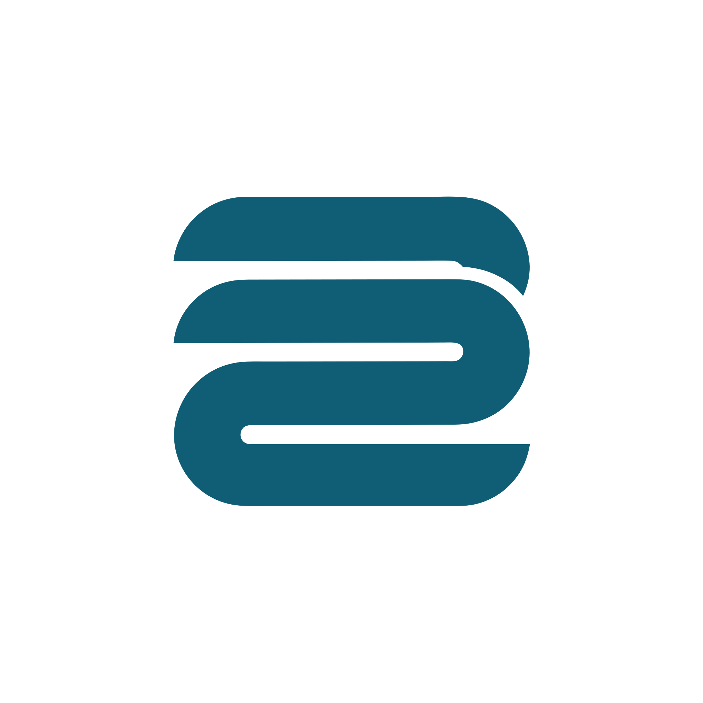
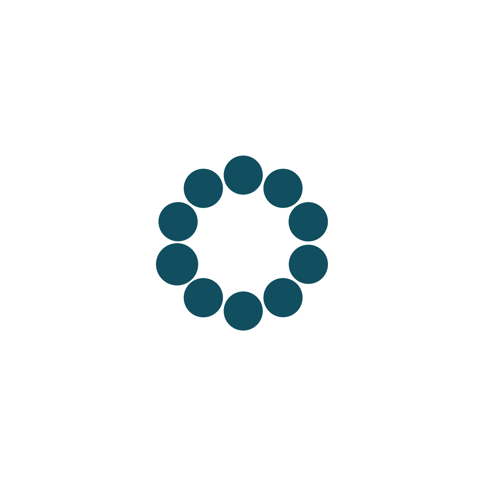

Every one of the 54 coloured pages carries Tendd set in Inter 700 at 16px, tracked out +0.02em, and that is the whole identity. There is no symbol, no app icon and no favicon in the repository, so the product has nothing that survives being 16px tall in a browser tab or square on a phone home screen.
This is a directions round, run the same way the visual language was found: drawings live in HTML at real sizes, one gets locked. Thirteen are on the page now: round three at the top, then round two, then the first three at the bottom. Each mark is geometry on a 32 grid, drawn once and used at every size on this page, so a small proof cannot quietly be a different, kinder drawing than the large one. A generated round ran alongside and sits further down, in the same role the brand plate had at Concept: a record of the search, never the file that ships.
The colours are not chosen here either: this page loads design/system/tokens.css, so the petrol is the product's petrol and the dark plates are the product's dark theme.
Rounds one and two produced the same animal eight times: a small flat glyph standing politely to the left of the word. That is the safe species, and safe is what was wrong with them. These five are not icons. One is a drawn letterform, one is a hole, one is bigger than the frame that holds it, one moves, and one is a sentence: the line that stops spiking.
One stroke. It starts as the thing money does to this person, sharp spikes with no pattern, and it ends as a straight line that just keeps going. Every finance mark in the world is a line going up. This is the only interesting thing a line can do in a product whose entire promise is that nothing spikes.
It is a story rather than a shape, which means it has a beginning and an end, which means it can move. Watch it draw itself below: that is the product's before and after in two seconds, and it is the same file on the app icon, the loading state and the launch screen.
Not an icon of a letter, a drawn letterform. The second d is threaded onto the first d's stem, so the two bowls interlock and the pair becomes one object that cannot be typed. This is the oldest trick in identity and the reason a wordmark ever becomes a monogram: the piece of the name that only this name has, cut out and made into a thing.
It is the only direction on this page that could carry an owned typeface later, because it already is one letter of it.
There is no glyph. There is a petrol field with a channel cut clean through it, running off the top and the bottom, and a counter punched beside the channel. What you read as a letter is the part that was removed. The mark is a hole, and the hole shows whatever is behind it: paper, a photograph, the dark canvas.
This one exists as a tile first and everything else second, which is the opposite of how the other twelve were built and is exactly why it does not look like them.
The letter is bigger than the thing holding it. The d is scaled past the edges of its own frame and cropped by them, so you get a fragment: a curve, a stem, and a lot of confidence. Nothing is centred and nothing has a polite margin.
It is the loudest thing on this page, and the one most likely to be described as modern in a year and dated in five. That trade is worth stating out loud rather than pretending it is neutral.
Chosen for depth. The letterform, the three canonical crops, the frame in motion, the other ratios and the five rules that keep it a system are on their own page: The mark: Crop.
Not one drawing: a rule. The mark is one tick per recurring payment, and the count is yours. Four subscriptions is a four-tick mark. Twelve is a twelve-tick mark. The one you had forgotten arrives last and stays solid after the others have faded back.
The product ships one canonical lockup so the brand is stable, and the system underneath it is alive: the empty state, the reveal, the share card and the year in review can all be the logo, drawn from real numbers. This is an identity, not a logo, and it is the only thing here that no other company can copy without copying the product.
Round one stayed inside one lane: a small flat glyph beside the word. None of it landed, so this round moves the lane instead of the drawing. Two of these are not symbols at all, one refuses the shape every money logo has, one is built out of a hole, and one says the second half of Petrol and Paper out loud. Round one is still on the page below, unedited.
Three bars at exactly one height. Every mark in this category rises to the right, because every other money product is about growth. Tendd is not: the promise is that nothing spikes, nothing surprises you, and the same amount goes out that went out last month. The mark is that sentence with nothing added to it.
It is the boldest shape of the eight and the easiest to recognise at a glance, and its whole meaning is a thing it refuses to do.
The word, cut. Monzo, Mercury and Ramp do not have a symbol beside the name, and for a product that lives in a 56px bar above a list, a symbol is one more thing competing with the number that matters. Here the identity is the wordmark itself: tighter than today's, heavier, and with the two d's pulled until their bowls touch, which is the one detail the name gives away for free.
The favicon problem is solved by the last letter alone, not by inventing a glyph nobody has seen.
A T built the way a receipt is built: a heavy rule across the top, and the list hanging under it in two segments. It is the first letter of the name and the last line of a bill at the same time, and it is the only monogram in the set, which makes it the most conventional and the most immediately readable as a brand.
A solid form with a bite out of its corner, and the bitten piece sitting beside it. The product's best moment is the one where something leaves your month and does not come back, and this is that moment as a shape: not a chart, not a letter, a thing minus a thing.
The notch and the loose piece are exactly the same size, which is what makes it subtraction rather than decoration, and the whole thing stays one silhouette in one colour: no knockout version, no second colour, nothing to keep in sync.
The locked language is called Petrol and Paper, and so far only the petrol half has ever been drawn. This is the other half: a sheet with one corner turned back, cut square and modern rather than skeuomorphic, with the fold as a hole instead of a highlight.
It is the only mark here that says statement, bill, the thing you were avoiding opening, and turns it into something already handled.
Three drawings that did not land, left exactly as they were. A round that deletes what it did not choose leaves the next person no way to know what was already tried.
The distinctive thing about the name is the pair of d's, and a lowercase d is already the shape of the product's row: a round mark on the left, a line on the right. Here the two d's share one rail, so the mark is a real ligature rather than a letter placed twice, and the two open counters keep it reading as type instead of as two dots on a bar.
It is the only one of the three that could not belong to another product, because it is built out of this name.
Two lines and a sum. The lines shorten as they go down and the last one thickens, so the mark is the product's first rule drawn in three strokes: the most important number is the biggest thing on screen. It is the quietest of the three and the strongest at small size, because at 16px it is still three clean stripes.
It is also the most borrowable: a list of bars belongs to a lot of software. The variant below fades the rows and keeps the total solid, which pushes it away from a menu icon and toward a receipt.
Twelve things going out every month, and one of them is the one you did not know about. The mark is that count: eleven even dots and a twelfth that has grown. It is the product's most important emotional beat drawn, and the only one of the three with a story attached.
It is also the one closest to a cliche. A ring of tapered segments is a progress spinner in every other app, which is why these are round dots at one weight: a spinner fades and turns, a count sits still. The variant below tries the same idea as one broken ring with a bead.
Both rounds were also put through Magnific, as raster brand sheets and as vector, to widen
the search faster than a hand can draw. They are a
record of the search, not candidates: the colour comes back near petrol but not at
#1c6a76, the geometry is not on a grid, and none of it is a file the app bar
could load. What they are good for is telling us which shapes inside a family we had not
tried.
Three things came back worth taking into a redraw: the mirrored pair, two half-bowls facing each other, which is a dd nobody would mistake for a list icon; the overlapping ligature, where the second d sits inside the first; and the funnel, a tally whose lines narrow to a point rather than stopping at a total.



The eight are not equal in work, and the honest differences are worth having in front of you before choosing. None of them changes a token: the mark spends petrol on the third of its three permitted jobs, the trust line, and takes nothing away from the primary action.
| Direction | What it owns | Where it is weak | Work after the lock |
|---|---|---|---|
| 9. Flatline | The only mark that tells the product's story, and the only one that can move. | Nearest neighbour is a heartbeat, and it dies below 24px. | A reduced cut for small sizes, and a motion rule saying where it is allowed to animate. |
| 10. The ligature | A drawn letterform that could not be typed, and the seed of an owned typeface later. | The interlock is the first thing lost when it shrinks. | Draw the single-d cut for the tab, and settle the lockup, since the mark repeats the end of the word. |
| 11. Cut | One file on every ground, and the strongest presence at small sizes on the page. | It has no standalone mark. Take away the field and there is nothing left. | Almost none. It is already an icon, a favicon and a chip. |
| 12. Crop | The loudest and most contemporary. Gets clearer as it gets smaller. | A fragment, not a letter. Most likely of the thirteen to date. | A crop rule: which part of the letter the frame keeps, at every ratio. |
| 13. The living mark | An identity rather than a logo, and the only one nobody can copy without copying the product. | Needs governance. Without rules it becomes twelve inconsistent logos. | The most work here: the canonical lockup, plus written rules for where the count is allowed to vary. |
| 4. Level | The loudest silhouette and the clearest idea: a chart that will not rise. | Three bars is a shape other software uses. It needs the story told once. | Almost none. Same geometry from 88 down to 16, tile included. |
| 5. No mark at all | Ships tomorrow, reads at every size, and nothing new to maintain. | Tendd owns no shape. Anywhere the word will not fit, there is nothing. | One type decision plus the letter tile. The only reversible choice here. |
| 6. The rule | The letter of the name, and the most conventional brand answer on the page. | Safe. A T in a tile could belong to any company beginning with T. | Decide whether the lockup keeps the mark, since it repeats the letter. |
| 7. Taken out | The only mark that says what the product does rather than what it is about. | Fragile at 16, where the loose piece is a single pixel-ish square. | A reduced cut for the favicon: the notch alone, no loose piece. |
| 8. Paper | Says the second half of the locked language, and holds its silhouette small. | The operating system owns this shape. It reads as a file before it reads as a brand. | The tile has to become the fold alone, or the icon is a square in a square. |
| 1. The doubled d | Belongs to this name and to no other product. Two readings from one drawing. | The busiest at 16px: two counters to keep open in a tab. | A separate small-size cut, either one d instead of two or solid bowls, and a decision about which one the favicon uses. |
| 2. The calm tally | The product's first rule, drawn. Strongest at every small size, cheapest in one colour. | Least distinctive: a list of bars is not ownable on its own. | Almost none. The lockup and the favicon are the same geometry. |
| 3. The reveal | The one with the story: the count and the small win. | Nearest to a spinner, and the most fragile below 20px. | Prove it against a real loading state, and draw a reduced cut for the favicon: fewer dots, larger. |
Once you name one, this is the chain it runs, and it is short because the system already exists:
.appbar, since the app bar is where it lives on all 54 pages. It reaches every
screen through the kit, not by editing screens.Everything above stays on the page afterwards. A round that deletes the two it did not choose leaves the next person no way to know what was already tried.